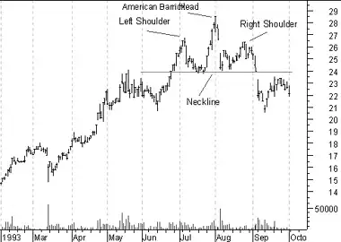
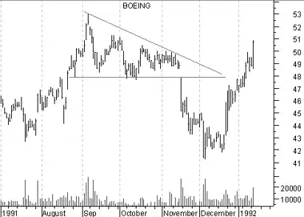
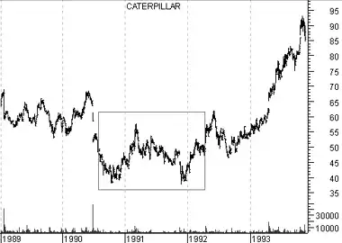

Patterns
Overview
A basic principle of technical analysis is that security prices move in trends. We also know that trends do not last forever. They eventually change direction and when they do, they rarely do so on a dime. Instead, prices typically decelerate, pause, and then reverse. These phases occur as investors form new expectations and by doing so, shift the security's supply/demand lines.
The changing of expectations often causes price patterns to emerge. Although no two markets are identical, their price patterns are often very similar. Predictable price behavior often follows these price patterns.
Chart patterns can last from a few days to many months or even years. Generally speaking, the longer a pattern takes to form, the more dramatic the ensuing price move.
Interpretation
The following sections explain some of the more common price patterns. For more information on chart patterns, I suggest the book, Technical Analysis of Stock Trends by Robert Edwards and John Magee.
Head-and-Shoulders
The Head-and-Shoulders price pattern is the most reliable and well-known chart pattern. It gets its name from the resemblance of a head with two shoulders on either side. The reason this reversal pattern is so common is due to the manner in which trends typically reverse.
A up-trend is formed as prices make higher-highs and higher-lows in a stair-step fashion. The trend is broken when this upward climb ends. As you can see in the following illustration, the "left shoulder" and the "head" are the last two higher-highs.
The right shoulder is created as the bulls try to push prices higher, but are unable to do so. This signifies the end of the up-trend. Confirmation of a new down-trend occurs when the "neckline" is penetrated.During a healthy up-trend, volume should increase during each rally. A sign that the trend is weakening occurs when the volume accompanying rallies is less than the volume accompanying the preceding rally. In a typical Head-and-Shoulders pattern, volume decreases on the head and is especially light on the right shoulder.
Following the penetration of the neckline, it is very common for prices to return to the neckline in a last effort to continue the up-trend (as shown in the preceding chart). If prices are then unable to rise above the neckline, they usually decline rapidly on increased volume.
An inverse (or upside-down) Head-and-Shoulders pattern often coincides with market bottoms. As with a normal Head-and-Shoulders pattern, volume usually decreases as the pattern is formed and then increases as prices rise above the neckline.
Rounding Tops and Bottoms
Rounding tops occur as expectations gradually shift from bullish to bearish. The gradual, yet steady shift forms a rounded top. Rounding bottoms occur as expectations gradually shift from bearish to bullish.
Volume during both rounding tops and rounding bottoms often mirrors the bowl-like shape of prices during a rounding bottom. Volume, which was high during the previous trend, decreases as expectations shift and traders become indecisive. Volume then increases as the new trend is established.
The following chart shows Goodyear and a classic rounding bottom formation.

Triangles
A triangle occurs as the range between peaks and troughs narrows. Triangles typically occur as prices encounter a support or resistance level which constricts the prices.
A "symmetrical triangle" occurs when prices are making both lower-highs and higher-lows. An "ascending triangle" occurs when there are higher-lows (as with a symmetrical triangle), but the highs are occurring at the same price level due to resistance. The odds favor an upside breakout from an ascending triangle. A "descending triangle" occurs when there are lower-highs (as with a symmetrical triangle), but the lows are occurring at the same price level due to support. The odds favor a downside breakout from a descending triangle.
Just as pressure increases when water is forced through a narrow opening, the "pressure" of prices increases as the triangle pattern forms. Prices will usually breakout rapidly from a triangle. Breakouts are confirmed when they are accompanied by an increase in volume.
The most reliable breakouts occur somewhere between half and three-quarters of the distance between the beginning and end (apex) of the triangle. There are seldom many clues as to the direction prices will break out of a symmetrical triangle. If prices move all the way through the triangle to the apex, a breakout is unlikely.
The following chart shows Boeing and a descending triangle.
 Note the strong downside breakout on increased volume.Double Tops and Bottoms
A double top occurs when prices rise to a resistance level on significant volume, retreat, and subsequently return to the resistance level on decreased volume. Prices then decline marking the beginning of a new down-trend.
A double bottom has the same characteristics as a double top except it is upside-down.
The following chart shows Caterpillar and a double bottom pattern.
